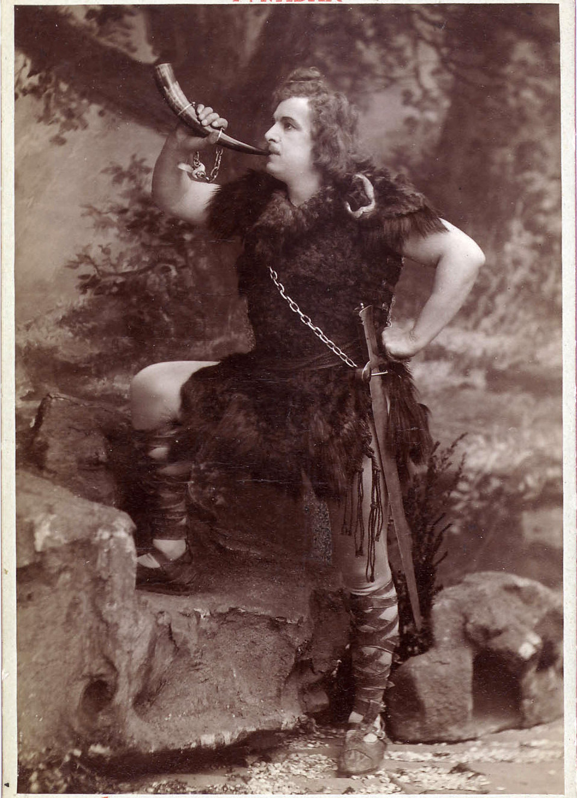
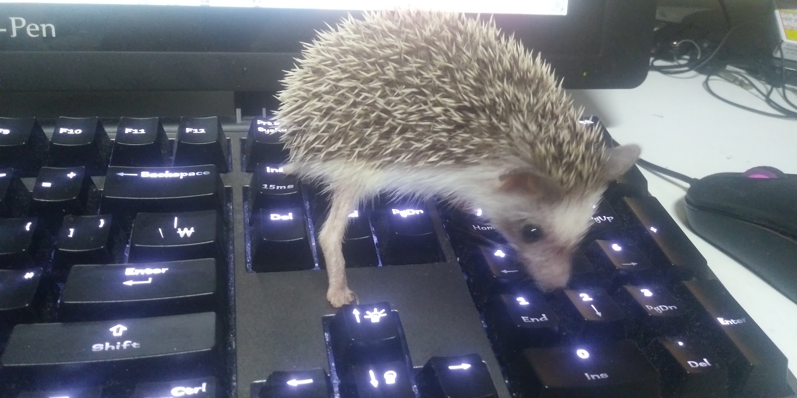

His Story
|  |
Siegfried the hedgehog was named after Siegfried, also known as Sigurd.
Siegfried is a legendary hero of German mythology, and the main character of the Nibelungenlied. He is known for wielding the holy sword Balmung and the cloak of invisibility. With it he slayed the dragon Papnir and showerd in it's blood, making him imortal except a point in his back which was coverd by a fallen leaf. In the end, he meets a tragic death by being pierced in the back. This is the reason I chose his name for my hedgehog. Since hedgehogs have spines to protect their backs, he wouldn't be pierced from the back, meaning he will be imortal. So I named him Siegfried in the hope that he will live long and without harm. Thankfully, he hasn't been sick yet, and I hope this keeps on. I decided to adopt Siegfried at October 2018. At first I wasn't thinking of anything particular. But given my circumstances, I wanted a pet without much noise, and yet a king I can interact with. I searched on the web and found that hedgehogs are quiet and make a nice partner to live with. Though it wasn't costless, I decided to adopt him as a new member of my family. A lot of people recommended adopting a newborn baby, since hedgehogs are extremely shy and get hard to be friendly as they grow up. So when I first met Siegfried he was a month old. |
Since he was only a baby, he needed a lot of caring. I had to teach him to eat from his bowl, to drink from the water dispenser, and to use his toilet. Though it was quite a tiring job, it was fun to do so.

The most frustrating part of raising Siegfried was his bites. Hedgehogs are known to bite often but he was a bit off bounds. He just randomly bites things he sees, including my fingers. It took a long time for him to stop biting me. It's not that he never bites me now though, he still wakes me up by biting on me when he calls me.